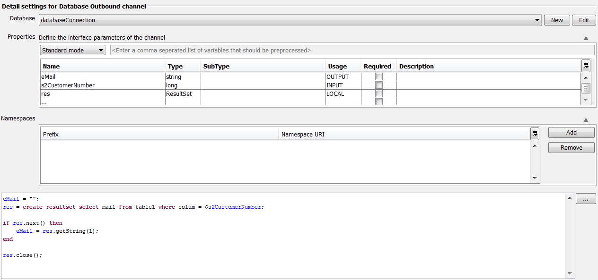
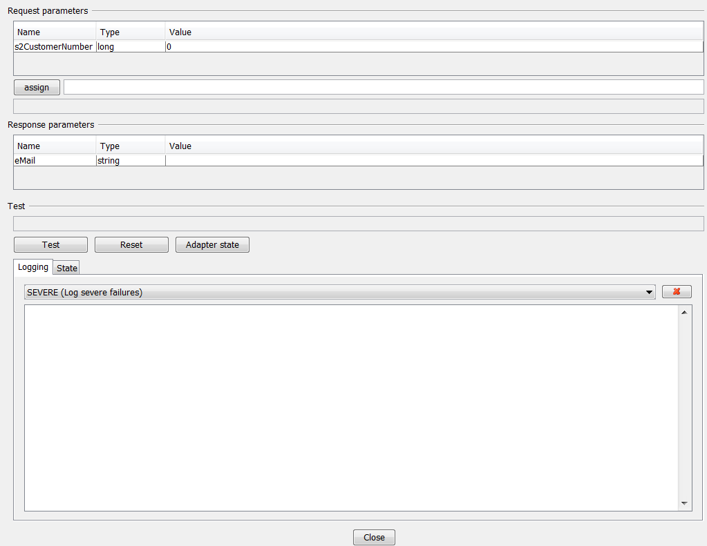
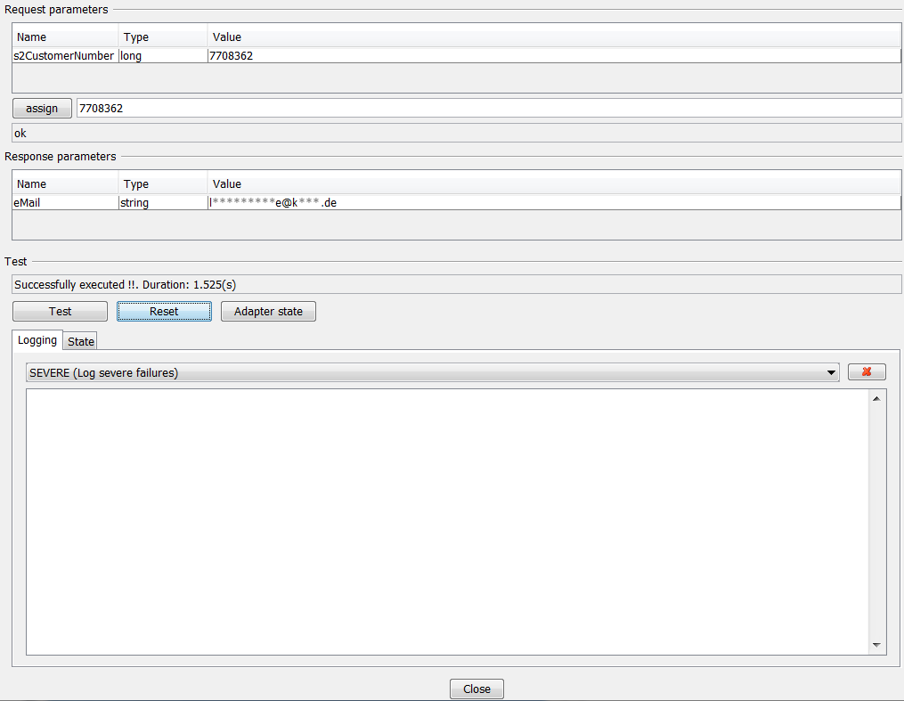

How to test channels

Topic content
In order to test a specific channel you have to open the one you want to test by double-clicking it. Afterwards you are able to select the lightning icon in the toolbar at the top of your screen.
Then the channel-test starts and asks for parameters if they are needed to fulfill the task of the channel.
To show how it basically works, a rather simple example will be shown in the next few pictures.
Example with Database Outbound Channel:
The task of the channel is to get the mail-address of a customer by inputting its customerNumber as a parameter.

In the picture below you can see the GUI right after starting the test for this channel. As it has been defined before the test asks for value-assignment as in input for the test.
After filling the needed fields it is possible to actually start the test

After running a successful test the response parameter is set and can be used in further steps.
If everything worked as intended the success-information and the duration is displayed. If there is a negative result the exceptions, failure and warnings can be displayed in the logging-box-below.

It is possible to reset the results which are the results of the test by clicking on the Reset-button. Further information about the adapter can be seen by clicking the Adapter state-Button.